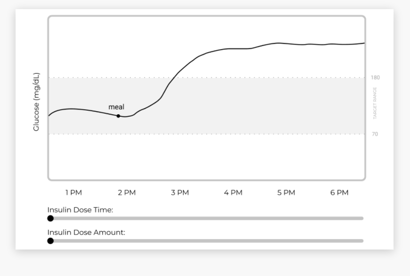

Scope: UX/UI, User Research, Web Design Team: Allison P. , Stephanie K. , & Vidya R. InsuLearn Link
Insulearn - educational tool
As part of the Diabetes Design Initiative, my team, under the guidance of mentors Gayle Lorenzi (RN, CDCES), Arizona Milotich, Dr. Lars Mueller, and Heidi Rataj, designed an interactive visual tool to support both healthcare providers and patients in learning diabetes management.
✅ Our mission was to make diabetes, specifically the relationship between insulin and glucose, easier to understand and manage. Our goal was to design an interactive learning tool that would help users visualize & better understand confusing diabetes concepts.
Diabetes technology like continuous glucose monitors (CGM) and insulin pumps grant huge amounts of data to people with diabetes. This data affords them opportunities to understand how diabetes affects their body, which can lead to more effective diabetes management. However, there is a lack of support and tools that can help users understand essential diabetes concepts and data produced from their diabetes devices.
Fig. 1. Examples of CGM Data
Living with diabetes can be stressful. On top of the physical, emotional, and financial challenges, once a person is diagnosed, there is an overwhelming amount of information they need to learn and understand quickly in order to manage a healthy lifestyle (figuring out food intake, complex carbs, exercising, the technology, the side effects of medication, and more.)
Fig. 2. Healthcare providers explaining trends and activity.
Currently, most healthcare providers rely on pen and paper to explain insulin and glucose patterns to their patients. The patient learns in real-time but, what if they have questions? They have to book another appointment via telehealth, leaving lots of opportunities for missed education and understanding.
To further understand the core problems within diabetes management, our team dove into this domain by conducting research and interviews with two healthcare providers and four continuous monitoring (CGM)/insulin pump users.
1. Lack of Visual Learning Tools
Healthcare providers rely on impromptu drawings to explain important concepts. Patients are left with little time to absorb information during their doctor visits and may not have the opportunity to review the drawings illustrating the fluctuations in blood sugar levels and the implications of diabetes.
2. Information Overload
Patients expressed that when first learning about such a complex condition as diabetes, keeping it simple is best.
3. Long Trial and Error Phase
A lot of insulin pump users underwent a long, frustrating trial-and-error phase to in order to understand insulin timing
4. Pre-Bolusing is a Challenging Concept
Pre-bolusing is a relatively new concept and patients are reluctant to try it since they don’t know all the details
After considering these four essential points, our team distilled these insights into a single, guiding question as the primary focus of our tool's development.
The initial ideation process focused on three opportunity points gathered from the user research that the team and I developed into sketches. Our goal was to design a visual tool that could effectively convey key concepts to patients without overwhelming or confusing them.
Fig. 3. Rapid ideation sketches.
1. Understanding Insulin Timing and Dosing
Healthcare providers stressed understanding insulin is essential. So we created a sliding graph to represent the changes in timing and dosing
2. Providing Personalized Care
Adjusting relevant insights and feedback to the person personalizes their experience. Through inputting personal CGM data, users could see an example of how their blood sugars would react
3. Using Visual Explanations
Contrary to static paper drawings, digital interactive learning tools can be dynamic. Providing users with engaging stories could help patients better visualize and instill important diabetes concepts
Despite the numerous concepts involved in diabetes management, our tool focused on the most critical aspect for new diabetes patients: the importance of insulin timing and dosing for glucose levels. This decision was based on insights from healthcare providers we interviewed and was necessary due to time constraints.
Wireframe for the Insulin Sliding Graph
Fig. 4. Early wireframe for our manually sliding graph.
We implemented an interactive insulin time and dose sliders to simulate how the individual’s action can affect their glucose levels in real time.
The team conducted four rounds of user and usability testing over the course of a month. Collaborating and testing with a range of healthcare providers and individuals living with diabetes was essential to ensure that the graphs we presented were accurate and safe for insulin dosing and timing information. Through our extensive testing, we acquired invaluable insights that fortified our iterative prototypes and enabled us to deliver an optimal product.
Fig. 5. Four iterations of our prototype.
1. Decrease Clicking
Information pop-ups were useful but increased clicking activity, causing minor annoyance to users
2. Simplify User Interface
The tool should be intuitive without a tutorial, it should not further complicate the UX nor require the user to spend additional time learning another concept on top of diabetes
3. Optimize Graphs
Graphs should be dynamic and match various insulin dose change scenarios.
4. Visualize Insulin Activity
Showing the immediate effects of insulin pushing down glucose levels is essential to helping users understand patterns.
Fig. 6. Main features of our prototype.
Over four weeks of iterations, our team optimized the accuracy of our graphs, giving careful thought to terminology and providing context to the user for their best understanding.
Our main goal was to provide the most simple visualizations for users. Thanks to our testing, we developed a clean design that highlighted concepts with clear separation and clarity.
We crafted three distinct graphs, each dedicated to dissecting a crucial aspect of learning about Insulin: one for Insulin Timing, another for Insulin Dosing, and a final graph that integrates both timing and dosing concepts, empowering individuals managing diabetes to master these essential concepts step by step.
Fig. 7. InsuLearn's Insulin Timing and Dosing slider graph.
In addition, we introduced a diabetes terminology page aimed at providing individuals living with diabetes, as well as their friends and family, with a comprehensive resource to enhance their understanding of the condition.
Fig. 8. Provided users with a terminology page.
“These are all great topics to talk about but it seems like nobody teaches this well. They are good, basic, easy to understand definitions of diabetes...language seems really good.” - Participant, Endocrinology PA
After our final round of user testing, we received overwhelming positive feedback from healthcare professionals and people living with diabetes!
“I think it’s a really cool starting point, and I can see this playing out much [bigger]...it’s very cool and useful...I don’t know if there’s anything out there like this."
-Participant L, NP, CDE
“This is also a great learning tool for health students, or anyone who’d have to care for someone with diabetes, for example, someone like a school nurse... This kind of module is simple enough that someone without diabetes could see what’s happening.”
-Participant A, T1D, and medical student
“I would love to share with [someone] newly diagnosed, new on insulin or weren’t understanding through other ways of learning. This would be a good first learning tool as well as supplementary learning tool."
-Participant E, T1D, and medical professional
InsuLearn is the first chapter of an interactive visual book on diabetes, created by the community, for the community.
How else can we visualize to make diabetes management easier to understand?
Moving forward, our users could see themselves using these tools to understand the multitude of factors in diabetes, such as the effects of exercise, complex meals, stress, pregnancy, and menstrual cycles.
There are infinite ways design could help in further visualizing and understanding diabetes, and I hope to further iterate upon these tools and inspire others to support patients in having more success in their diabetes management!
In the updated version, we included a nutrition portion while some visual changes were made to the graphs!
 Contact ->
Contact ->